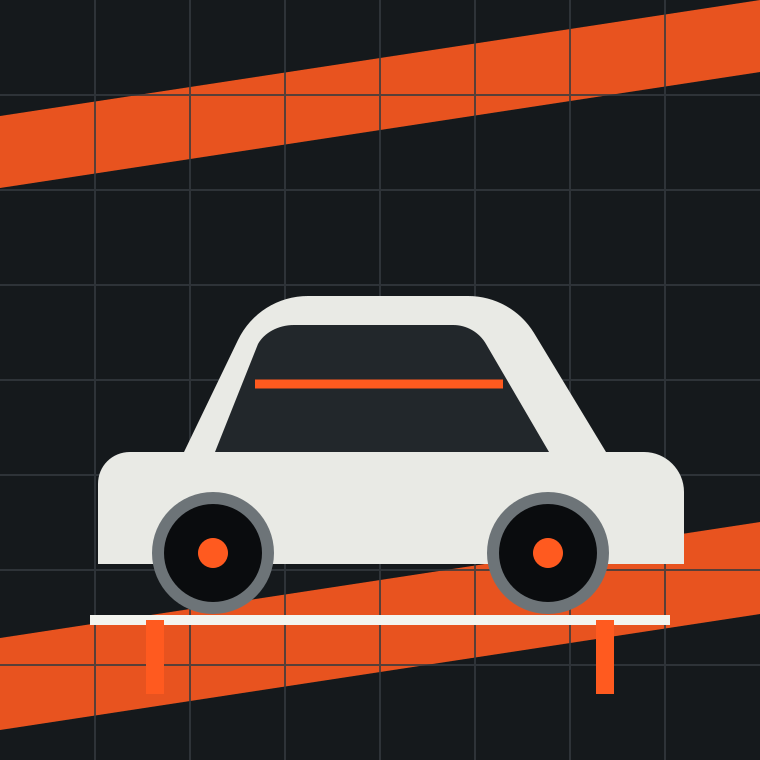

Смета до старта
Цена и состав работ зафиксированы до первого снятого болта.
Локальный автосервис · Тестовый город
Диагностика без догадок, согласование до ремонта и чёткий срок выдачи.

01 / Что делаем
Находим причину, фиксируем результат, объясняем без технического тумана.
Проверка, понятная смета и замена только согласованных деталей.
Масла, фильтры и расходники по допускам вашего автомобиля.
Поиск неисправностей цепи, аккумулятора, стартера и генератора.
02 / Почему мы
Цена и состав работ зафиксированы до первого снятого болта.
Показываем состояние узлов и результат в удобном формате.
Если диагностика меняет план, сначала связываемся с вами.
Не откладывайте странный звук